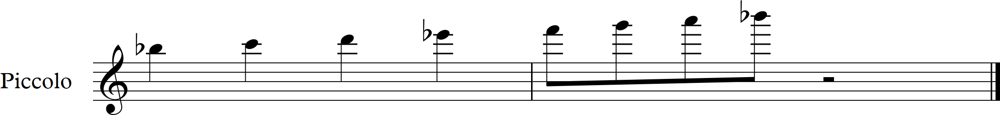
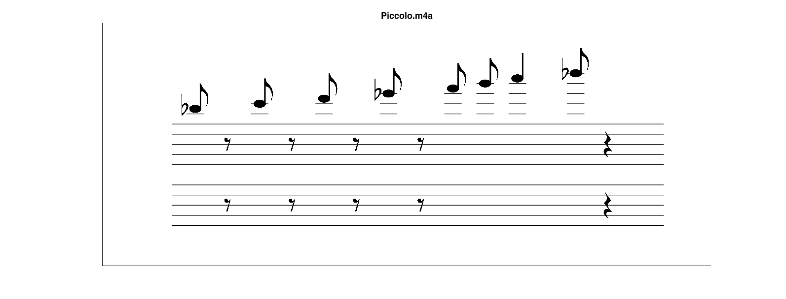
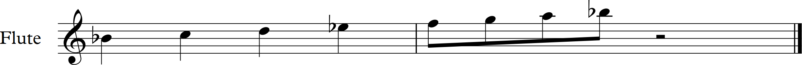
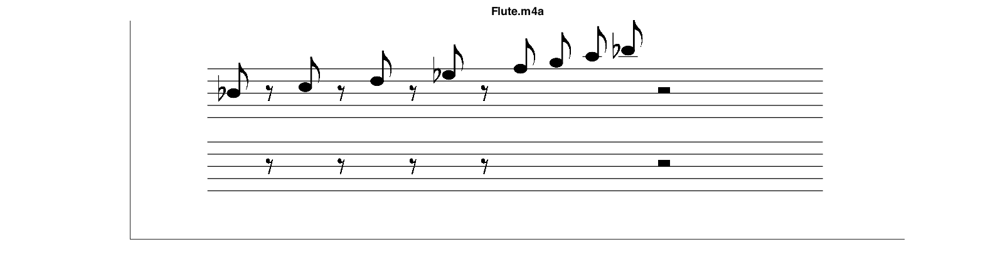
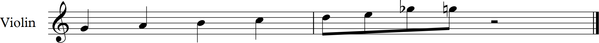
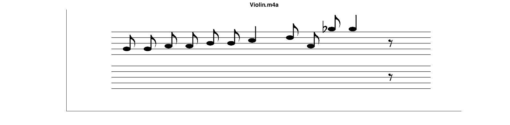

Transcriptions
Testing OverTone with a variety of instruments.
For each instrument, the original part is shown, followed by OverTone's transcription.


OverTone's piccolo transcription was quite accurate, with only one error where an eigth note was lengthened to a quarter note. This may be because our algorithm falsely detected an additional foot tap.


OverTone perfectly transcribed the notes and rhythms for the flute scale. The quarter notes were interpreted as eigth notes and eigth rests because the musician played them in a short style.
 
todo